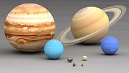

| Tabela Informações dos Planetas | Planetas | Raio | Distância Sol | Ano | cor |
|---|---|---|---|---|
| Mercurio | 2 | 57 | 88 dias | (177, 173, 173) |
| Venus | 6 | 108 | 224 | (146, 133, 144) |
| Terra | 6 | 149 | 365 | (2, 60, 167) |
| Marte | 4 | 228 | 687 | (193, 68, 14) |
| Jupiter | 71 | 778 | 11 anos Terra 4015 dias | (220, 208, 184) |
| Saturno | 60 | 1427 | 29 anos Terra 10585 dias | (237, 219, 173) |
| Urano | 26 | 2870 | 84 anos Terra 30660 dias | 46, 156, 154 |
| Netuno | 25 | 4497 | 164 anos Terras 59860 dias | 75,170,205 |